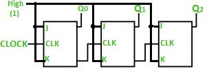
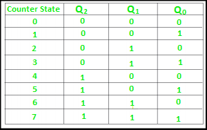
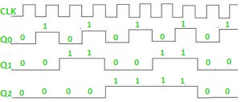

Prerequisite – Counters, n-bit Johnson Counter
A counter is basically used to count the number of clock pulses applied to a flip-flop. It can also be used for Frequency divider, time measurement, frequency measurement, distance measurement and also for generating square waveforms. In this, the flip-flops are asynchronous counters and are supplied with different clock signals, there may be a delay in producing output.
Also, a few numbers of logic gates are needed to design asynchronous counters. So they are elementary in design and also are less expensive.
Ripple counter –
A n-bit ripple counter can count up to 2n states. It is also known as MOD n counter. It is known as ripple counter because of the way the clock pulse ripples its way through the flip-flops. Some of the features of ripple counter are:
- It is an asynchronous counter.
- Different flip-flops are used with a different clock pulse.
- All the flip-flops are used in toggle mode.
- Only one flip-flop is applied with an external clock pulse and another flip-flop clock is obtained from the output of the previous flip-flop.
- The flip-flop applied with external clock pulse act as LSB (Least Significant Bit) in the counting sequence.
A counter may be an up counter that counts upwards or can be a down counter that counts downwards or can do both i.e.count up as well as count downwards depending on the input control. The sequence of counting usually gets repeated after a limit. When counting up, for n-bit counter the count sequence goes from 000, 001, 010, … 110, 111, 000, 001, … etc. When counting down the count sequence goes in the opposite manner: 111, 110, … 010, 001, 000, 111, 110, … etc.
A 3-bit Ripple counter using JK flip-flop –

In the circuit shown in above figure, Q0(LSB) will toggle for every clock pulse because JK flip-flop works in toggle mode when both J and K are applied 1, 1 or high input. The following counter will toggle when the previous one changes from 1 to 0
Truth Table –

The 3-bit ripple counter used in the circuit above has eight different states, each one of which represents a count value. Similarly, a counter having n flip-flops can have a maximum of 2 to the power n states. The number of states that a counter owns is known as its mod (modulo) number. Hence a 3-bit counter is a mod-8 counter.
A mod-n counter may also be described as a divide-by-n counter. This is because the most significant flip-flop (the furthest flip-flop from the original clock pulse) produces one pulse for every n pulses at the clock input of the least significant flip-flop (the one triggers by the clock pulse). Thus, the above counter is an example of a divide-by-4 counter.
Timing diagram – Let us assume that the clock is negative edge triggered so above counter will act as an up counter because the clock is negative edge triggered and output is taken from Q.

Counters are used very frequently to divide clock frequencies and their uses mainly involve in digital clocks and in multiplexing. The widely known example of the counter is parallel to serial data conversion logic.